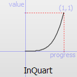
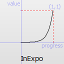
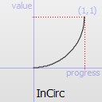
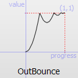

PropertyAnimation QML Type
Animates changes in property values. More...
| Import Statement: | import QtQuick |
| Inherits: | |
| Inherited By: | ColorAnimation, NumberAnimation, RotationAnimation, and Vector3dAnimation |
Properties
- duration : int
- easing
- easing.amplitude : real
- easing.bezierCurve : list<real>
- easing.overshoot : real
- easing.period : real
- easing.type : enumeration
- exclude : list<QtObject>
- from : variant
- properties : string
- property : string
- target : QtObject
- targets : list<QtObject>
- to : variant
Detailed Description
PropertyAnimation provides a way to animate changes to a property's value.
It can be used to define animations in a number of ways:
- In a Transition
For example, to animate any objects that have changed their
xoryproperties as a result of a state change, using anInOutQuadeasing curve:Rectangle { id: rect width: 100; height: 100 color: "red" states: State { name: "moved" PropertyChanges { target: rect; x: 50 } } transitions: Transition { PropertyAnimation { properties: "x,y"; easing.type: Easing.InOutQuad } } }
- In a Behavior
For example, to animate all changes to a rectangle's
xproperty:Rectangle { width: 100; height: 100 color: "red" Behavior on x { PropertyAnimation {} } MouseArea { anchors.fill: parent; onClicked: parent.x = 50 } }
- As a property value source
For example, to repeatedly animate the rectangle's
xproperty:Rectangle { width: 100; height: 100 color: "red" SequentialAnimation on x { loops: Animation.Infinite PropertyAnimation { to: 50 } PropertyAnimation { to: 0 } } }
- In a signal handler
For example, to fade out
theObjectwhen clicked:MouseArea { anchors.fill: theObject onClicked: PropertyAnimation { target: theObject; property: "opacity"; to: 0 } }
- Standalone
For example, to animate
rect'swidthproperty over 500ms, from its current width to 30:Rectangle { id: theRect width: 100; height: 100 color: "red" // this is a standalone animation, it's not running by default PropertyAnimation { id: animation; target: theRect; property: "width"; to: 30; duration: 500 } MouseArea { anchors.fill: parent; onClicked: animation.running = true } }
Depending on how the animation is used, the set of properties normally used will be different. For more information see the individual property documentation, as well as the Animation and Transitions in Qt Quick introduction.
Note that PropertyAnimation inherits the abstract Animation type. This includes additional properties and methods for controlling the animation.
Modifying running animations
Since Qt 6.4, it is possible to set the from, to, duration, and easing properties on a top-level animation while it is running. The animation will take the changes into account on the next loop.
See also Animation and Transitions in Qt Quick and Qt Quick Examples - Animation.
Property Documentation
These properties are used as a set to determine which properties should be animated. The singular and plural forms are functionally identical, e.g.
NumberAnimation { target: theItem; property: "x"; to: 500 }
has the same meaning as
NumberAnimation { targets: theItem; properties: "x"; to: 500 }
The singular forms are slightly optimized, so if you do have only a single target/property to animate you should try to use them.
The targets property allows multiple targets to be set. For example, this animates the x property of both itemA and itemB:
NumberAnimation { targets: [itemA, itemB]; properties: "x"; to: 500 }
In many cases these properties do not need to be explicitly specified, as they can be inferred from the animation framework:
| Value Source / Behavior | When an animation is used as a value source or in a Behavior, the default target and property name to be animated can both be inferred.Rectangle { id: theRect width: 100; height: 100 color: Qt.rgba(0,0,1) NumberAnimation on x { to: 500; loops: Animation.Infinite } //animate theRect's x property Behavior on y { NumberAnimation {} } //animate theRect's y property } |
| Transition | When used in a transition, a property animation is assumed to match all targets but no properties. In practice, that means you need to specify at least the properties in order for the animation to do anything.Rectangle { id: theRect width: 100; height: 100 color: Qt.rgba(0,0,1) Item { id: uselessItem } states: State { name: "state1" PropertyChanges { theRect { x: 200 y: 200 z: 4 } uselessItem { x: 10 y: 10 z: 2 } } } transitions: Transition { //animate both theRect's and uselessItem's x and y to their final values NumberAnimation { properties: "x,y" } //animate theRect's z to its final value NumberAnimation { target: theRect; property: "z" } } } |
| Standalone | When an animation is used standalone, both the target and property need to be explicitly specified.Rectangle { id: theRect width: 100; height: 100 color: Qt.rgba(0,0,1) //need to explicitly specify target and property NumberAnimation { id: theAnim; target: theRect; property: "x"; to: 500 } MouseArea { anchors.fill: parent onClicked: theAnim.start() } } |
As seen in the above example, properties is specified as a comma-separated string of property names to animate.
See also exclude and Animation and Transitions in Qt Quick.
duration : int |
This property holds the duration of the animation, in milliseconds.
The default value is 250.
Specifies the easing curve used for the animation
To specify an easing curve you need to specify at least the type. For some curves you can also specify amplitude, period and/or overshoot (more details provided after the table). The default easing curve is Easing.Linear.
PropertyAnimation { properties: "y"; easing.type: Easing.InOutElastic; easing.amplitude: 2.0; easing.period: 1.5 }
Available types are:
Easing.Linear | Easing curve for a linear (t) function: velocity is constant. |  |
Easing.InQuad | Easing curve for a quadratic (t^2) function: accelerating from zero velocity. |  |
Easing.OutQuad | Easing curve for a quadratic (t^2) function: decelerating to zero velocity. |  |
Easing.InOutQuad | Easing curve for a quadratic (t^2) function: acceleration until halfway, then deceleration. |  |
Easing.OutInQuad | Easing curve for a quadratic (t^2) function: deceleration until halfway, then acceleration. |  |
Easing.InCubic | Easing curve for a cubic (t^3) function: accelerating from zero velocity. |  |
Easing.OutCubic | Easing curve for a cubic (t^3) function: decelerating to zero velocity. |  |
Easing.InOutCubic | Easing curve for a cubic (t^3) function: acceleration until halfway, then deceleration. |  |
Easing.OutInCubic | Easing curve for a cubic (t^3) function: deceleration until halfway, then acceleration. |  |
Easing.InQuart | Easing curve for a quartic (t^4) function: accelerating from zero velocity. |  |
Easing.OutQuart | Easing curve for a quartic (t^4) function: decelerating to zero velocity. |  |
Easing.InOutQuart | Easing curve for a quartic (t^4) function: acceleration until halfway, then deceleration. |  |
Easing.OutInQuart | Easing curve for a quartic (t^4) function: deceleration until halfway, then acceleration. |  |
Easing.InQuint | Easing curve for a quintic (t^5) function: accelerating from zero velocity. |  |
Easing.OutQuint | Easing curve for a quintic (t^5) function: decelerating to zero velocity. |  |
Easing.InOutQuint | Easing curve for a quintic (t^5) function: acceleration until halfway, then deceleration. |  |
Easing.OutInQuint | Easing curve for a quintic (t^5) function: deceleration until halfway, then acceleration. |  |
Easing.InSine | Easing curve for a sinusoidal (sin(t)) function: accelerating from zero velocity. |  |
Easing.OutSine | Easing curve for a sinusoidal (sin(t)) function: decelerating to zero velocity. |  |
Easing.InOutSine | Easing curve for a sinusoidal (sin(t)) function: acceleration until halfway, then deceleration. |  |
Easing.OutInSine | Easing curve for a sinusoidal (sin(t)) function: deceleration until halfway, then acceleration. |  |
Easing.InExpo | Easing curve for an exponential (2^t) function: accelerating from zero velocity. |  |
Easing.OutExpo | Easing curve for an exponential (2^t) function: decelerating to zero velocity. |  |
Easing.InOutExpo | Easing curve for an exponential (2^t) function: acceleration until halfway, then deceleration. |  |
Easing.OutInExpo | Easing curve for an exponential (2^t) function: deceleration until halfway, then acceleration. |  |
Easing.InCirc | Easing curve for a circular (sqrt(1-t^2)) function: accelerating from zero velocity. |  |
Easing.OutCirc | Easing curve for a circular (sqrt(1-t^2)) function: decelerating to zero velocity. |  |
Easing.InOutCirc | Easing curve for a circular (sqrt(1-t^2)) function: acceleration until halfway, then deceleration. |  |
Easing.OutInCirc | Easing curve for a circular (sqrt(1-t^2)) function: deceleration until halfway, then acceleration. |  |
Easing.InElastic | Easing curve for an elastic (exponentially decaying sine wave) function: accelerating from zero velocity. The peak amplitude can be set with the amplitude parameter, and the period of decay by the period parameter. |  |
Easing.OutElastic | Easing curve for an elastic (exponentially decaying sine wave) function: decelerating to zero velocity. The peak amplitude can be set with the amplitude parameter, and the period of decay by the period parameter. |  |
Easing.InOutElastic | Easing curve for an elastic (exponentially decaying sine wave) function: acceleration until halfway, then deceleration. |  |
Easing.OutInElastic | Easing curve for an elastic (exponentially decaying sine wave) function: deceleration until halfway, then acceleration. |  |
Easing.InBack | Easing curve for a back (overshooting cubic function: (s+1)*t^3 - s*t^2) easing in: accelerating from zero velocity. |  |
Easing.OutBack | Easing curve for a back (overshooting cubic function: (s+1)*t^3 - s*t^2) easing out: decelerating to zero velocity. |  |
Easing.InOutBack | Easing curve for a back (overshooting cubic function: (s+1)*t^3 - s*t^2) easing in/out: acceleration until halfway, then deceleration. |  |
Easing.OutInBack | Easing curve for a back (overshooting cubic easing: (s+1)*t^3 - s*t^2) easing out/in: deceleration until halfway, then acceleration. |  |
Easing.InBounce | Easing curve for a bounce (exponentially decaying parabolic bounce) function: accelerating from zero velocity. |  |
Easing.OutBounce | Easing curve for a bounce (exponentially decaying parabolic bounce) function: decelerating to zero velocity. |  |
Easing.InOutBounce | Easing curve for a bounce (exponentially decaying parabolic bounce) function easing in/out: acceleration until halfway, then deceleration. |  |
Easing.OutInBounce | Easing curve for a bounce (exponentially decaying parabolic bounce) function easing out/in: deceleration until halfway, then acceleration. |  |
Easing.BezierSpline | Custom easing curve defined by the easing.bezierCurve property. |
easing.amplitude is only applicable for bounce and elastic curves (curves of type Easing.InBounce, Easing.OutBounce, Easing.InOutBounce, Easing.OutInBounce, Easing.InElastic, Easing.OutElastic, Easing.InOutElastic or Easing.OutInElastic).
easing.overshoot is only applicable if easing.type is: Easing.InBack, Easing.OutBack, Easing.InOutBack or Easing.OutInBack.
easing.period is only applicable if easing.type is: Easing.InElastic, Easing.OutElastic, Easing.InOutElastic or Easing.OutInElastic.
easing.bezierCurve is only applicable if easing.type is: Easing.BezierSpline. This property is a list<real> containing groups of three points defining a curve from 0,0 to 1,1 - control1, control2, end point: [cx1, cy1, cx2, cy2, endx, endy, ...]. The last point must be 1,1.
See the Easing Curves for a demonstration of the different easing settings.
This property holds the items not to be affected by this animation.
See also PropertyAnimation::targets.
from : variant |
This property holds the starting value for the animation.
If the PropertyAnimation is defined within a Transition or Behavior, this value defaults to the value defined in the starting state of the Transition, or the current value of the property at the moment the Behavior is triggered.
See also Animation and Transitions in Qt Quick.
to : variant |
This property holds the end value for the animation.
If the PropertyAnimation is defined within a Transition or Behavior, this value defaults to the value defined in the end state of the Transition, or the value of the property change that triggered the Behavior.
See also Animation and Transitions in Qt Quick.